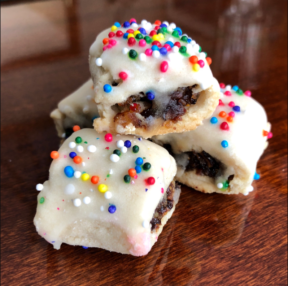

Are You Talkin' To Me Cuccidati

And I Said "My God"
Are you even Italian, bro? Can you even pronounce "Cuccidati" correctly? Me either, but one taste of these fig stuffed heavenly morsels will bring you right back to Grandma Rizzo's, Christmas Eve 1945. Get ready for an insane list of ingredients and a book of instructions.
Ingredients
Cuccidati dough:
- 3 ½ cup flour
- ⅔ cup sugar
- 6 oz butter
- 1 tbsp baking powder
- 2 eggs
- 1 tbsp vanilla extract
- 1-3 tbsp milk
- Pinch of salt
Cuccidati filling:
- 18 oz dried figs
- 3-4 tbsp candied orange peel and lemon peel
- 2 tbsp Marsala wine
- ½ cup raisins
- 2 oz dark chocolate
- ¼ cup walnuts (more to taste)
- ¼ cup almonds (more to taste)
- 1 tsp cinnamon powder
Glaze:
- 1 egg white
- ½ cup confectioners sugar
- ½ tsp lemon juice
- Pinch of salt
Directions
Cuccidati Dough:
- In a large bowl of food processor add all dry ingredients: sifted flour, sugar, baking powder, salt and cold butter cut in cubes. Process until you get a crumbly dough without big lumps.
- Add eggs and vanilla extract. Process again until dough starts to come together.
- The whole process can be done with dough blender which is really handy.
- Transfer the dough onto a work surface and shape it quickly with your hands forming a smooth ball. Add some milk if the dough doesn't come together.
- Cover with a plastic wrap and let rest in the fridge for 20-30 minutes.
- You can also make the dough the night before and keep it in the fridge. Make sure to take it out at least 2 hours before making cooking, otherwise it'll be too hard to roll.
Cuccidati Filling:
- Steep dried figs in hot water for about 30 minutes. Take them out on a paper towel or linen towel and pat-dry to remove excess liquid.
- In a food processor add figs, candied fruit and Marsala wine. Process until you get a nice paste.
- In a food processor pulse nuts and dark chocolate. Or you can roughly chop them with a sharp knife. Set aside.
- In a big bowl mix together fig paste, chopped nuts with chocolate, raisins and cinnamon.
Make Cookies:
- Preheat oven to 350F (175C).
- Cut off a piece of the dough and roll it out on a lightly floured surface to approx. ⅛ inch (3 mm) thick. Cut out a rectangular shape and save trimmed edges.
- Place fig filling lengthwise closer to one edge of the rectangle and fold the dough over to the other side brushing with some water the very end of the dough before closing it. This helps to seal the seam.
- Place formed log seam side down and using a pastry cutter or a sharp floured knife cut it into 1 inch (2.5 cm) cookies.
- Arrange the cookies on a baking sheet line with parchment paper or a silicone mat about ½ inch apart from each other.
- Bake in preheated to 350F (175C) oven for 15-20 minutes or until lightly golden brown around the edges.
- Let cool.
- Repeat with the remaining dough (including trimmed dough leftovers) and fig filling.
Make Icing:
- Beat egg white until foamy, add a pinch of salt and lemon juice.
- Continue to beat, slowly adding confectioners sugar. Increase speed to high and beat for another few minutes until soft peaks form.
Decorate Cookies:
- Once cookies are chilled to room temperature, dip them in the icing and top with color sprinkles.
- Let dry for a few hours before packing.
- If it's too cold or humid inside you can turn on the oven and heat to 85F (30C) and let your cookies dry in the oven for 20-60 minutes, checking on them occasionally.